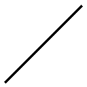

| ［分冊版］愛は歴史を救う～ドS天才哲学美少女！・アリストテレス編～ | |
| 田中創 | |
この本は縦書きでレイアウトされています。
また、ご覧になる機種により、表示の差が認められることがあります。


時震という言葉をご存知ですか？
知らない？ ああ、そうでしょうね。愚鈍な一般人には難しい言葉だったかもしれません。
時震は歴史上のヒトやモノを変異させ、並行歴史を生み出す謎現象です。
最先端の時空観測技術をもってしても、その原因は未だまったくもって不明なんだとか。とはいえ、この並行歴史が増えてしまうと、宇宙が崩壊するというのだから大変です。さっさとなんとかする必要がありますね。
はいそうです。それを行うのが私たちＴＨＲ――航時局歴史管理課なんですよ。
時空を超えて過去の世界に赴き、変異した歴史を修正する。それが私たちのお仕事です。私はオペレーターなんで、基本的に時空移動はしませんけどね。面倒くさいですし。
実際に過去に行くのは他のエージェントです。みなさん、偉人として知られる歴史上のプロフェッショナルたちばかりですよ。
カリスマ（？）溢れる美少女皇帝、ナポレオン・ボナパルト。
武力もすごいがスタイルもすごい。ツインテ武将娘、呂布奉先。
ハイテクマシンも巨大ロボもお任せ。恋に一途な発明王、トーマス・アルバ・エジソン。
彼女たちはみな、時震の影響を受けた偉人少女ばかりです。私のように。
――ああ、そうそう。エージェントと言えば、もうひとりいましたね。
愚鈍で無知なうえに、スケベ極まる屑野郎。ＴＨＲの隊長、御戸ミツキさん。
歴史修正任務の名目で、現地の偉人少女たちを次々と手籠めにしていくどうしようもない男です。下半身でしかモノを考えられないんですかね。あのひとは。
あんな屑野郎が、果たして時震の謎を解き明かすことが出来るのか。
その下劣極まる欲望は、上司、フレドリカさんへと伝わるのか。
......後者はまあ、知ったこっちゃないですけどね。
まあともあれ。これから語られるのは、そんな御戸さんが、初めて私――アリストテレスと出会った頃についてのお話ですよ。
２０２１４21 航時局 カフェテリア『オーロージュ』
テーブルの上に載せた一眼レフのレンズを拭きながら、八巻はいつものように怪しげな笑みを浮かべていた。
「このあいだ、貴様のところに入った例の美少女だが」
「美少女って、ナポ子？」
僕が尋ねると、八巻は「そうだ」と眼鏡の弦を押し上げる。
「あれはなかなかに興味を惹かれるな」
「え。そうなの」
「ドジっ子というか放っておけない系というか......。あの手の美少女は男性の庇護欲をかきたてる。被写体としては実に優秀だな」
八巻の言葉に、僕は「まあ、そうかもね」と同意する。
先月、ＴＨＲの見習いエージェントになった偉人少女、ナポレオン・ボナパルト。
あの無駄に偉そうな皇帝陛下の〝カリスマ〟は、この広報課局員すら魅了してしまったようだ。
「つい先日もエレベーターの中で戸惑っているところに出くわしたのだがな。あの娘、〝閉〟ボタンを連打しながら『出られないわ!!』と半泣きになっていた」
「またそんなドジを......」
「あの娘の萌力は尋常じゃない。扉を叩いて唸る彼女の姿に、俺は気づけばシャッターを切ってしまっていた」
「せめてその前に助けてあげようよ」
「馬鹿言え。美少女の痴態に遭遇したらまずは撮影をする。それが礼儀というものだろう」
しみじみ呟くこの長身の男の名は、八巻良人。
航時局広報課に籍を置く、若きウェブデザイナーだ。
年齢は確か、僕よりも一個上。所属する課は違えど、いちおう同期である。こうしてときどき、局内の喫茶店で一緒に昼食をとる程度には仲が良い。
この男が編集している航時局ＨＰは、局内外を問わず非常に人気が高かった。
特に、『美少女局員の日常』（略して『びしょにち』）ページの閲覧数はものすごい。更新のたびにサーバーが落ちるほどのアクセス数を誇っているのだ。
その手の有識者によれば、八巻自らが撮影した女子局員たちの無防備な表情は、下手なアイドルのグラビアなんかよりもエロティシズムをかきたてるものだと評価されている。
八巻本人いわく、「趣味と実益を兼ねた天職」なのだそうだが......しかし僕は、いつかこいつが盗撮で捕まるんじゃないかと心配だったりもする。一応友人として。
八巻が「それにしても」と続ける。
「ＴＨＲの女性エージェントというのは、みなカメラ映えする美人ぞろいだな。実に素晴らしい。あのセクシーなチャイナ娘や、小動物めいたアメリカ少女......彼女たちなら、単独で写真集を出したとしても売れるだろう」
「奉先とアルちゃんね。まあルックスはいいよね」
性格とか能力には難がありすぎだけど。
「そしてもちろん、あの銀髪少女を忘れてはいけない。ああいうクールでミステリアス系の美少女には、男の視線はいつの世も惹きつけられてしまうものだ」
「ああ、アリス......」
古代ギリシャの哲学娘――。『万学の祖』、アリストテレス。
あの毒舌オペレーターは、八巻の中ではわりと正統派な美少女評価を得ているらしい。
確かにそりゃ、ビジュアルだけなら繊細なアンティーク人形ばりの女の子だ。中身も美少女だと誤解されても仕方のないところではあるけれども。
「あの天使のような少女のスク水グラビアを撮ることが出来るなら、俺は五十万出せる」
「五十万!?」
「いちおう断っておくが、俺はあの天使を芸術作品として昇華させたいだけだ。決して変態的ロリコン願望があるわけではないぞ」
八巻は変態的ロリコン願望の持ち主だった。
「でも、天使は言いすぎじゃないかなあ」僕は眉をひそめる。「アリスが可愛く見えるのはわからないでもないけど、中身はかなりキツイし」
「どういう意味だ？」
「正直、会話をしたら一発で目が覚めると思うけどねえ」
微妙な表情でパスタを啜る僕を見て、八巻は「そうなのか」と首を傾げる。
「なあ御戸。どういう子なんだ、あのアリスという少女は」
「どういう子って、とにかく口の悪いオペレーターっていうか......。最初に話したときなんて、僕、あまりの暴言に泣きそうになったからね」
「ふむ。面白そうな話だな。詳しく頼む」
八巻が、興味津々という顔でこちらを見つめている。
僕はパスタを食べる手を止め、ため息をついた。
「正直、詳しく話すのはちょっと......。あまり話して面白いもんじゃないし」
「いいから教えろ。食券一枚おごってやる」
「つってもナポリタンのでしょ。いらない」
この店のナポリタンは超マズイ。航時局の常識だった。
「そう言うな。ミニサラダセットも付ける」
この男、どうしてもアリスの話を聞きたいらしい。やはり真性のロリコンなのか？
結局、「デザートもおごってやる」という八巻の押しの強さに負け、僕はしぶしぶ口を開くことにした。
「アリスと初めて会ったのは、去年の春だね」
「というと、俺たちがここに就職したばかりの頃だな」
「そう。あれはフレドリカさんの執務室に初めて入ったときのことだったんだけど」
２０２０４３ 航時局歴史管理課 課長執務室
ＴＨＲ課長――僕の憧れのひとである高嶺フレドリカさんは、手元の書類と僕を何度も見比べながら、呆れたようなため息をついていた。
「筆記試験も面接試験も、全試験オールＡ。志願者の中で成績トップ......これ、本当にミツキくんの成績？ カンニングとかじゃなく？」
「頑張りましたからね僕!! フレドリカさんの元で働くために!!」
このときの僕は、人生で一、二を争うほど得意げな表情を浮かべていたと思う。
この部屋――フレドリカさんの執務室にたどり着くまでに、僕はどれほどの苦労を重ねたことだろうか。学生時代からわき目も振らずに勉強に励み、厳しい試験の数々を突破し、ようやく僕は航時局局員という地位を得ることが出来たのである。
つまり今日から僕は、泣く子も黙るＴＨＲエージェント!!
全ては彼女に僕の男らしさを認めてもらい、人生を共に歩んでいただくため。ついに僕は、そのスタートラインに立つことが出来たのである。
「まさか、本当にうちに就職しちゃうとは......。お姉ちゃんびっくりだよ」
「ええ。今日からはもう姉と弟じゃありません!! 僕はひとりの立派な社会人!! フレドリカさんの部下です!!」
「実感湧かないなあ。あのちっちゃかったミツキくんが、ねえ」
「もう小さくないですよ？ 見ます？」
「ズ、ズボンは下ろさなくていいから。ていうかそんな話はしてないから」
僕の冗談に顔を赤らめるフレドリカさん。
やっぱりこのひと、可愛いなあ。
「ともあれ、今日からは部下としてなんでも遠慮なくお申しつけください!! 掃除洗濯雑用だろうと、命がけの任務だろうと!! 夜のお相手だろうと!!」
「よ、夜のお相手は別にいらないかなー......」
「なら朝でもいいですよ!! 昼でも夕方でも!! 二十四時間三百六十五日、僕は年中いつでもウェルカムです!! コンビニエンスなミツキくんです!!」
「いや、別にコンビニエンスは求めてなくてね？」
フレドリカさんが困り顔を浮かべていると、部屋の隅から「ははは」と笑い声が上がった。
それまで壁を背にして読書していた綺麗な女性が、本から顔を上げてこちらを見ていたのである。
「話に聞いてたとおり面白い子だな。この子、フレドリカの弟だろ？」
「弟じゃないです」僕は咄嗟に口を開く。
「でもキミ、弟としてフレドリカの家族に引き取られたって聞いてるぞ。ほら、例の事件のあとに......」
「しばらく面倒みてもらいましたけど、法的に家族になったわけじゃないですから。あくまで弟的存在ってだけです」
「ふうん。弟的存在」
「ええ。家族になるのはむしろこれからですよ。夫として、ですけど。ハズバンド」
フレドリカさんは「冗談ばっかり」と頰を膨らませる。
僕は本気なんだけどなあ......。
「やっぱ面白いね。この男の子」
けらけらと声を上げて笑うのは、当時のＴＨＲのオペレーター。プラトンさんだ。
〝イデア論〟とかいう難しそうな概念を提唱した古代ギリシャの哲学者で、西洋哲学の祖とされる偉人さん......らしい。
時震によるトラブルがきっかけでフレドリカさんと知り合い、以来ＴＨＲのオペレーターを務めるようになったとか。フレドリカさんによれば「相棒みたいなひと」らしい。
そのプラトンさんが、僕をまじまじと見つめながら口を開いた。
「はっきりと自分の好意を口に出せる。私みたいな理屈屋と違って、いい子じゃないか。こういう子が仲間になるっていうんなら、私は大歓迎だよ」
「あ、ありがとうございますっ!!」僕はプラトンさんに頭を下げる。
切れ長の瞳に細面。端整なルックスのショートカット美人だ。可愛いというよりはカッコいいタイプ。ダークのパンツスーツが似合う、いわゆる大人の女性だった。
こういう綺麗なひとに褒められると、素直に嬉しくなるのが青少年の性というもの。
もっとも、もうひとりの美人は「はあ」と浮かない表情だったのだが。
「うーん、私としては反対なんだけどな......ミツキくんがこの仕事をするのは」
「どうして？」とプラトンさん。
「だって、危険な時代に行くような任務も多いし......怪我とかしたら心配だよ」
ああ、フレドリカさんが僕を気遣ってくれている......!! なんとも男冥利に尽きる話ではないか!!
「未来の恋人にはなるべく危険を冒してほしくない。そういうことですねフレドリカさん」
「あくまでお姉ちゃんとして、ね」
するっとスルー。いつものことだが鉄壁である。
しかし、今回ばかりはこのフレドリカさんに首を縦に振ってもらわねば困るのだ。
僕の目標は、ＴＨＲエージェントとして活躍すること。フレドリカさんの元で有能なところを見せ、男らしさを知ってもらうことなのである。
すなわち、彼女が僕を部下だと認めてくれることこそが、未来予想図の第一歩なのだ。スタートラインでリタイアするわけにはいかない。
そのためには、どうやってこの過保護なお姉ちゃんを説得したものか。
僕が頭を抱えていると、
「じゃあさ、ひとつここでも試験をしてみればいい」
プラトンさんが口を開いた。
「試験？」僕とフレドリカさんが同時に声を上げる。
「ほらフレドリカ。棚上げになってた例の件。あれをこの子にやらせてみたら」
「ああ、あの時代の時震......」フレドリカさんが眉をひそめた。「歴史変異率に対する影響もそこまで高くなかったから、新人用の任務にしようって言ってたやつだよね」
「そうそう。ミツキくんがそれをうまく解決できたら、ＴＨＲに快く迎えてあげるってことでいいんじゃないか。いわゆる実技試験だ」
「たしかに、ああいうトラブルなら差し迫った危険はなさそうだけど......」
頷き合うふたりに、僕は尋ねる。
「実技試験......。その時震って、どんなんです？」
時震とは、事象を変異させてしまう原因不明の時空歪曲現象のことだ。時震によって、本来の歴史では起こりえなかった数々の並行歴史が生まれてしまっているのである。
このＴＨＲの任務は、時震によって変異してしまった歴史を可能な限り修正することなのである。実技試験としてそれを実際に行うというのは、理にはかなった話だ。
「実は、私の元いた時代での時震なんだけどさ」プラトンさんが答えた。「私が面倒を見ていた子供の中にひとり、手のかかる子がいたんだ。そいつが、時震のせいでとても厄介な能力に目覚めちゃってね」
時震による事象変異は、時として人間に超人的な才能を与えてしまうことがある。そのせいで歴史が正しい筋道を外れることは、往々にして起こるもの......らしい。
「その能力のせいで、その子、以前にも増して誰の言うことも聞かなくなったんだよ。いわば問題児だな」
「問題児ですか」
「ああ。とにかく口が悪くて頭でっかちの、引きこもり生徒だよ」
「生徒って......プラトンさんは先生か何かなんですか？」
「そうだよ」彼女は鷹揚に頷いた。「これでも私は昔、結構大きな学園を仕切ってたんだ。〝アカデメイア〟って聞いたことないかい？」
僕が首を傾げていると、横からフレドリカさんが助け船を出してくれる。
「古代ギリシャ最大の学園だよ。幾何学、天文学、哲学とか......西洋の学問は、全部そのアカデメイアから生まれたと言っても過言じゃないの。大学の語源になるくらいすごかったんだから」
「へえ。じゃ、世界中の学校の親分みたいなもんなんですね」
「そうだぞ。そして私はそこの学長だからな。これでも偉いんだ」
えっへん、とプラトンさんが冗談っぽく胸を張ってみせる。
このプラトンってお姉さん、綺麗なだけじゃなくて、そんなすごいひとだったとは。まったく知らなかった。
「ダメだよミツキくん。ＴＨＲエージェントなら、歴史には詳しくならなくちゃ」
フレドリカさんにダメ出しされてしまう。
試験のために歴史はそこそこ勉強したはずなんだけど、所詮は一夜漬けみたいなもんだったしなあ......。すっかり忘却の彼方なのだ。
「す、すいません。不勉強でして」
「ま、自分の無知を素直に認められるのはいいことさ」プラトンさんが笑う。「無知こそ学問探求の始まりになるって、私の師匠も言ってたぞ。〝無知の知〟だって」
なるほど、含蓄がある言葉だ。さすが哲学者。
「でも、残念ながら教え子の方には通じないかもしれないな。あいつ、バカは大嫌いだから」
「はあ、大嫌い」
「しかも厄介なことにあいつ、基本的に自分以外の人間を全部バカだと思ってる節があるんだよな。自分以外全員バカだから、人間全員嫌いだって」
「ああ......たまにいますよね、そういう子」
周りを見下して自分の殻に閉じこもっちゃうタイプ......。そういうタイプの子供はどこの学校でも少なからずいる。確かにそういう子は、教師の指導など聞かないだろう。
フレドリカさんも「ううん」と唸っている。
「その子がそんな頑なな態度のままじゃ、偉人として大成しないんだよね。そうなると、歴史的な不具合が生じちゃう。その結果は......わかるよね？」
「並行歴史が発生することになって、ゆくゆくは宇宙崩壊ですか」
時空の歪みは、別な歴史、別な世界を生じさせる。それらが積み重なると次元情報量が飽和し、宇宙が崩壊してしまう――正直実感は湧かないが、それを食い止めるのがＴＨＲの目的なのだそうだ。
「頼むよミツキくん。あの問題児を更生させてやってくれないか？ それが試験内容だ」
「話はわかりました」僕は頷いた。「要は、その問題児の心を開いてやればいいと」
「肉体的に危険ってわけじゃないけど、たぶん精神的には結構キツイと思う。......どうするミツキくん？ この試験、挑戦してみるかい？」
試すような面持ちで、じっと僕を見つめるプラトンさん。
もっともそうやって確認されるまでもなく、僕の心はすでに決まっていたのだけれど。
Ｂ．Ｃ．３６７５29 ギリシャ アテナイ 〝アカデメイア〟
歪んでいた視界がだんだんとピントを取り戻し、正常になっていく。
「......おえっぷ」
僕は吐き気をこらえながら、その場に蹲ってしまった。
生まれて初めての時空移動――ぶっちゃけ、ものすごく気持ち悪かった。
なにせこの時点ではまだ、ＴＨＲには頼れるメカニックはいないし、タキオンウォッチも試作品の域を出ていない。まだまだ不完全な航時局の時空移動技術は、使用者にハンパない〝時空酔い〟を与えるものだったのである。
遊園地のティーカップのハンドルを、全力で百回くらい回したあとの気持ち悪さを想像してほしい。三半規管はグールグル。僕は思いきり酔ってしまったというわけである。
そんな僕の醜態には、同行者であるプラトンさんも苦笑していた。
「おいおいミツキくん、大丈夫か？」
彼女は余裕のようだ。さすがベテランは慣れてるなあ......。
「だ、大丈夫です......」
なんとか深呼吸をして、周囲の状況を確認できるくらいには回復する。
鮮やかに萌える木立の緑が目に飛びこんできた。どうやら僕たちが〝飛んで〟きたのは、閑散とした林の中らしい。頭上からは、柔らかな木漏れ日が差しこんでいる。
耳に聞こえてくるのは、葉のざわめきや小鳥たちの囀り。穏やかに森林浴を楽しむには、うってつけの場所かもしれない。
「あれは......」
閑散とした木立の向こうに、白い大理石でできた大きな柱が何本も立っているのが見えた。それこそギリシャの神殿のような、立派な建物だ。
プラトンさんが得意げに指さす。
「あれが私の学園。アカデメイアだよ」
入り口の石段のところには、揃いのローブを身につけた少年少女たち――十歳くらいの年頃だろうか――が、腰を下ろしてなにやら議論をしている様子が窺える。
「古代ギリシャの学び舎って、こういう雰囲気なんですね」
「牧歌的でいいだろう？ 気に入ってくれると嬉しい。なんたって、しばらくキミの職場になるんだし」
そう。僕は今日から、このアカデメイアの臨時教師になるのだ。
教師として、プラトンさんの言っていた例の問題児を更正させる――それが、僕に課せられたＴＨＲの実技試験だった。先生なんて呼ばれる柄じゃないのは重々承知だが、頑張らねば。フレドリカさんとの未来のために。
「それじゃミツキくん、ついてきてくれ」
プラトンさんのあとに続いて、僕は白い建物の中に足を踏み入れた。
建物中央には、広い中庭が見える。プラトンさんによれば、生徒を集めた講義は主にあの中庭で行われるそうだ。青空学級のスタイルだ。
一方この白い建物自体は、もっぱら教師や生徒の寄宿舎として使われているらしい。
「あいつの部屋は、一番奥だ」
先導されるまま、石造りの廊下を歩いていく。
さすがギリシャ最大の学び舎というだけあって、建物内部はなんだか知的で静謐な雰囲気に満ちあふれていた。
調度品は派手すぎず野暮すぎず、綺麗に整えられている。すれ違うローブ姿の子供たちも、なんだかみんな理知的な顔つきをしている気がした。
生徒たちはプラトンさんの姿を見つけるや、目を輝かせて集まってくる。
「こんにちは先生」「今日はわたしと議論してくれますか？」「わたしの方が先ですよね？」
プラトンさんの袖を引っ張ったり、手を握ったり。なるほど、プラトンさんは学園の子供たちにたいそう慕われているようだ。
「先生、今日はわたしとお昼を食べましょう」「あ、ずるい!! 抜け駆けはダメよ!!」「あなたいつもそうやって、先生を独り占めしようとするんだから!!」
慕われているどころか......モテモテである。それも女の子の生徒ばかりに。
実際プラトンさん、女の子に好かれそうなルックスだしなあ。月組とか花組とか、そっち系の美人さんだし。
子供たちの頭を撫でながら、プラトンさんが苦笑する。
「ごめんなみんな。私はこれから、このひとを案内しなくちゃいけないんだ」
「新しい先生ですか？」ひとりの女の子が、僕を興味深げに見つめる。「あまり頭よさそうな感じじゃありませんけど」
余計なお世話だった。バカっぽい顔ですみませんね。
プラトンさんは「こらこら」と生徒を窘める。
「このひとは、アリスの個人教師だよ」
アリス、という名前を聞いて、子供たちは一斉に息を呑んだ。
それから僕の方に気の毒そうな目を向け、「頑張ってくださいね」と言って散っていく。関わり合いになりたくない――どの子の顔にも、そんな色が浮かんでいた。
「なんです、あの反応」
「アリスのやつ、同級生にもビビられてるからなあ......」
「アリスって、その問題児ですか」
「そうそう。......ほら、着いたよ」
廊下の一番奥で、プラトンさんが足を止める。
木造のドアにはプレートが打ちつけられており、この部屋の生徒の名前が記されているようだった。
「ええと、〝アリストテレス〟......？」
「おいアリス。いるか？」プラトンさんが扉を叩く。「新しい先生を連れてきたぞ」
しかし、部屋の中から返事はない。
その代わりに、なんだか唸るような苦しむような、くぐもった声が聞こえてくる。
「どうしたんですかね？」
「さあ......？」プラトンさんはなぜか苦笑いを浮かべていた。「ミツキくん、アリスの様子を見てくれるか。私は他の子の面倒も見なければいけないから」
振り返ると、女生徒たちが遠巻きにプラトンさんを見つめていた。
「わかりました」僕は頷き、プラトンさんを見送る。
そうだ。僕は今日から、このアリスという生徒の先生になるのだ。相手が問題児ならば、おどおどしたり、怯えた態度を見せるわけにはいかない。
人間、第一印象で全てが決まるのだ。まずは明るく元気な挨拶をして、相手と打ち解ける姿勢を見せなければ。
そう思って僕は、勢いよくドアを開いた。
「やあアリス!! 僕は御戸――」
しかし部屋の中の光景を目にした瞬間、僕は硬直する。
「あっ......んんっ......ふうっ......!!」
木造のベッドの上に、半脱ぎローブの少女が横たわっていた。細い足の間に自らの手を差し入れ、なにやら恍惚とした表情で身悶えていたのである。
「ひ、ひええええええっ!?」
目に飛びこんできたあられもない姿に、僕は情けない悲鳴をあげてしまっていた。
なにこれ？ なにしてんのこの子？
自ら秘部をなぞる指先は透明な雫に濡れ、お尻の下のシーツはぐっしょりと湿っている。
くちゅくちゅと水音を響かせながら、軽い痙攣を繰り返す少女――僕の視線は、その小さな身体にすっかり釘付けになってしまっていたのだった。
「んんっ、あっ......」
なんだか妙に艶めかしい。立てた両脚の隙間から、ぷるんと丸みを帯びた白いお尻が覗いている。細い手足には余分な肉が一切なく、芸術的とさえ言ってもいい艶姿だった。
「ん、ふっ、ああっ」
「あわわわ......」
開いた口を閉じることすらできない。僕はただ狼狽えながら、その行為を凝視し続けるしかなかったのだった。
ややあって、少女の方も戸口の僕に気づいたようで、
「......ちょっと、そこの変態」
「え、変態......？」
「こんなの見て楽しいんですか。このロリコン。ロリ屑が」
とろん、とした銀の目が、僕に向けられる。
これが西洋最大の哲学者、アリストテレスとの出会いだった。
Ｂ．Ｃ．３６７５29 アカデメイア アリストテレス・私室
机の椅子に座ったシルバーブロンドの女の子――アリスが、能面のような冷たい表情でじっと僕を見つめている。
「......え、ええと。僕は御戸ミツキといって、しがない臨時教師なんですけども」
「............」
反応ゼロ。
あれ、これいわゆるシカトってやつですか？
「あ、あの？ もしもーし？ 聞こえてる？ 僕、新しい先生ですよ？」
「............ちっ」
うおう。びっくり。まさか初対面で舌打ちされるとは。
「だ、だめだよアリス、先生にそんな態度とっちゃ――」
「ごちゃごちゃうるさいんですよ、ロリ屑」
「ロ、ロリ屑......」
鋭い視線に射竦められ、僕は言葉を失う。
いくらなんでも、初対面でロリ屑はひどすぎるんじゃないだろうか。
「だいたい、そんな助平ヅラで教師なんて何かの冗談ですか？ 覗き魔の間違いでは」
まるで犯罪者を見るような目で、アリスは僕を睨みつける。
この状況、超気まずい......!!
「キミ、可愛い顔のわりに結構言うこと厳しいね......」
「可愛いとかやめてくださいこの犯罪者。虫唾が走ります」
そう言われても、実際可愛らしいのだから仕方がない。
宝石のように綺麗な銀の瞳に、腰まで届く長い銀の髪。アカデメイア指定のローブをまとったその体軀は、僕が片手で抱きかかえられるくらいに小柄だった（実際そんなことしたらタイホまっしぐらだろうけれども）。
目た目の年齢は......他の子供たちと同じくらいだろうか。
それでも、表情にはなんだか妙に大人びた雰囲気があった。とろんとした眠そうな目が、見た目にそぐわないアンニュイな印象を与えている。まあ白昼堂々あんなことに耽っているあたり、大人というかアダルトというか微妙なところなのだが。
そんなアリスは、明らかに僕に敵意を向けていた。やっぱり、あれを目撃してしまったのが原因なのだろうか。
僕は意を決して「あのね」と口を開く。
「ぼ、僕はその、覗くつもりじゃなかったんだよ。たまたまドアを開けたらキミがあんなことしてたってだけでね？ ロリコンとか覗き魔じゃないんだよ」
「はっ。どうだか」
「いや、ほんとに......。ていうかさ、そもそも、真っ昼間からあんなことしてたキミの方にも問題があるような気がするんだけど......」
「個室で何をしていようと生徒の自由でしょう」ぴしゃりとアリスが言い放つ。「それともなんですか、あなたは他人にいっさいの自慰行為を認めないのですか。これまでの人生、一回も自分で自分を慰めたことがないとでも言い張るんですか」
「うう。そ、そんなことはないけど」
初対面なのに、完全に言い負かされていた。教師の尊厳など微塵もない。
「はあ」と深くため息。
とにかく最悪だった。第一印象はもっとこう、頼れるお兄さん的教師像を演出しようと思ったのに。いきなり覗き魔扱いとは......どうしてこうなった!!
プラトンさんに事情を説明してもらおうと思ったのだが、彼女は他の女生徒たちに半ば引きずられるように連れられていってしまった。生徒に好かれる教師は大変である。
だからって、ここまで嫌われる教師もどうかと思うんですけどね......。
ともあれ、要するにこのアリスの教育に関しては、僕に一任されてしまったというわけだ。それでこうして、彼女の個室を用いて第一回の授業が開始されたのだが――正直、最初から暗礁に乗り上げてしまっている感は否めない。
こんな印象最悪のスタートで、どうやってこの子の心を開けというのか。
頭を抱える僕を見て、アリスが「そもそもですね」と口を開いた。
「別に私には何もやましいことをしていたつもりはありません。あれは研究活動なんです」
「研究活動？ なんの？」
「保健体育の」冗談とも本気ともつかない声色で、アリスは続ける。「二次性徴期における性的欲求の解消のためには、肉体のどの部位にどのような刺激を加えることが最も適切なのか。独自研究をしていただけです」
「なにその研究......」
それ、ひとりエッチ以外の何ものでもなくね？
「常に知識を追い求める。それが哲学者のあるべき姿ですから」
「その理屈だと、エロスに夢中な少年少女はみんな哲学者だよね？」
そんな僕の言葉を、アリスは「はん」と一笑に付す。
「どうせあなたのサル並みの頭脳じゃ、私の崇高な理念は理解できませんよ」
「サ、サルですか」
「サルでしょう。私の行為を見て、股間を硬くしているくらいですし」
「か、硬くしてないよ!?」
噓です。ちょっぴり硬くなってました。マイサン。
「え、ええと、ともかく僕は不埒なことなんて何も考えてないからね？ なんたってほら、僕は今日からキミの教師なんだから」
「はっ、教師ね」薔薇の蕾のような唇を歪め、アリスが僕を睨みつける。「プラトン先生も飽きませんね。私にモノを教えられる教師なんて、世界中どこを探しても存在しないというのに。よりによって今度は、こんなロリコン野郎を連れてくるとは」
はい。事前情報どおりの、大変に生意気なお子様でございました。
精緻なアンティーク人形みたいに可愛らしい顔立ちをしているくせに、口から出るのは罵倒の数々。紳士を自称する僕ですら、ちょっとカチンと来てしまうレベルだ。
「で、この変態はどんな勉強を私に教えてくれるんですかね？」
「どんなって。子供相手の勉強くらいなら、ひと通りは教えられると思うけど」
「ひと通り？ なんでもわかるっていうんですか？」
「まあ、うん。そうだよ。これでも僕、そこそこ高度な教育を受けた人間だからね」
だいたいここは二千年以上も昔の世界なのだ。現代人である僕から見れば、原始時代に毛が生えた程度の学力水準だろう。いいオッサンが、せいぜい三平方の定理を発見して「すげー」とか言ってたくらいなんだし。
そんな時代の子供の勉強なんて、ベイビィの手を軽くツイストするようなものである。
「では御戸さん。理科はどうでしょう。最近わからないところがあって」
「理科ね。ＯＫ」
理科がわからないなんて、可愛いではないか。生意気でも、所詮は子供なのだ。
「ええと、わからないところはどこ？ 電流でも天体でも、どんとこいだ」
「では」アリスが口を開く。「世界を構成する要素を『温』と『冷』、『乾』と『湿』という二対立要素で類型化した場合、人間の精神や魂といったものはどう分類するべきなのでしょうか」
「え？」絶句する。
「四大要素の組み合わせのいずれかとして類型化されるべきものなのか。それとも新たな第五要素を考慮しなければならないのか。第五要素として考える場合、これは外宇宙を構成するエーテル的な物質と同一視してよいのか。あるいはそもそも精神や魂といったものは、形而上の観念として類型から排除すべきなのか――」
「ちょ、ちょっと待った!!」僕は慌てて口を挟んだ。「宇宙人の言葉でしゃべるのはやめてくれない？」
「地球人の言葉ですけど？」
アリスが、蔑んだような瞳で僕を見ている。
まずい。なんだかバカにされている雰囲気......!?
「そ、そういう小難しいことは人生じゃ何の役にも立たないから、もっと役に立つことを覚えようね!!」
「それ世界中の哲学者全員を敵に回す発言ですからね」
わからないからといって、舐められるわけにもいかない。教師というのは実に難しい立場だ。
「あなた、本当に教師ですか？ やる気あるんですか？」
凄んだような視線で睨まれ、僕は「お、おう」と頷く。
「わかりました。それじゃ試してみましょう」
「試すって？」
「一問一答のクイズを出題します。あなたが私の教師として相応しいかどうか、まずテストをすることにしましょう」
「テ、テスト？」
あ、あれえ？ なんで主導権握られちゃってるの......？
「大見得を切ったんです。当然、逃げませんよね？」
アリスに流し目を向けられ、僕は頷くしかなかった。
そうだ。子供に舐められている場合じゃない。フレドリカさんとの未来のためには、まず彼女の信頼を勝ち取らねばならないのだ。
「いいでしょう」アリスが口元を緩ませる。「では第一問。地球の自転速度は」
え？ とイキナリ言葉に詰まる。
なんだっけ。そんなの学校で習うんだっけ。
僕がしばし言葉に詰まっていると、アリスが「時間切れです」と肩を竦める。
「正解は時速約一七〇〇キロ。地球の赤道周囲が四万キロであることさえ知っていれば、それを二十四時間で割るだけです。子供でも出来る計算ですよ」
「あ、そ、そうなんだ......」
遠回しに子供以下だって言われてる......？
「それでは第二問。世界で最も高い山はアジアのエベレストですが、アジア以外の六大陸で最も高い山はそれぞれなんでしょう」
「なんかウルトラクイズめいてきた......」
「賞品は出ませんけど。ごちゃごちゃ言ってないで、さっさと答えてください」
そう言われても、まったく思いつかなかった。
「ええと、ふ、富士山？ いや、これはアジアの山に入るんだっけ......？」
「ブーです」アリスが鼻で笑う。「正解はヨーロッパのエルブルス山。北アメリカのデナリ。南アメリカのアコンカグア。アフリカのキリマンジャロ。オーストラリアのコジオスコ。南極のヴィンソン・マシフ――以上です」
ひとつとしてわからなかった。聞いたことがない山の名前ばかりだ。キリマンジャロってコーヒーの銘柄じゃなかったんだ......。
「やれやれ。この程度で『そこそこ高度な教育を受けた人間』とか言われましても」
「くうっ......!?」アリスの挑発に、つい歯嚙みしてしまう。
なんなんだいったい。このアリスとかいう少女、子供のくせに驚くほどの知識の持ち主だ。トリビアの国のお姫様か。
「それでは第三問。幸若舞『敦盛』の中で、戦国武将、織田信長が特に好んだ有名な一節と言えば？」
「いやいや、ちょっと待って!? その設問はおかしいでしょ!!」
アリスが「はい？」と小首を傾げた。
「だってキミ、ここは紀元前のギリシャだよ。どうしてキミが織田信長を知ってるの。戦国時代はずっと未来の話だよ」
「ああ、そんなことですか」
なんでもない、とでもいうようにアリスは目を細め、さらりと続ける。
「大概のことは知ってるんです。こう見えて私は〝博識〟ですから」
「博識......？」
過去の世界の人間のくせに未来の出来事を知っているなんて、ただの物知りというレベルじゃない。これはどういう意味なのか。
目を丸くする僕を見て、アリスはくすりと頰を緩める。
「たとえば、そうですね......。今から三百年ほど後にナザレで神の子を名乗る男が現れることも、十三世紀にモンゴル帝国が最大の領土を得ることも、十八世紀末に産業革命が起こることも。それから二十世紀に人類が二度の世界大戦を経験することも......。この世界で起こる予定の事象について、私が知らないことはありません」
「な、なんで？ なんでそんなこと知ってるの？」
「なんでと言われても。ある日急にわかるようになってしまった、と言う他ありませんね」
そっけなくアリスが呟く。
ある日急にわかるようになった――それはすなわち、時震の影響なのだろう。〝博識〟とは、アリスが得てしまった力を指すらしい。
なるほど、この子がひねくれちゃったのは、この能力のせいか......。
「ちなみに先ほどの敦盛の一節は、『人間五十年 下天のうちをくらぶれば 夢幻のごとくなり』ですよ。信長が辞世の句にしたという説もあります」
「ああ、そうなんだ......」
僕ですら知らなかった日本の歴史雑学を諳んじるアリスの姿には、呆れるしかなかった。
プラトンさんが「厄介」だと言うのもわかる気がする。教える前からなんでも知ってるなんて、実に教師泣かせの能力じゃないか。
「勉強になりましたね。よかったですね」
アリスは僕を見上げて、薄い笑いを浮かべていた。
心底ひとを小馬鹿にしたような態度である。そりゃあ人間、知識があれば無知な人間を見下したくもなるだろうけれども。
「では最後の問題。ジャンルは哲学です」
「哲学......。よ、よし。今度こそ当ててみせる!!」
「それでは問題。『人間は考える葦である』と言ったのはパスカル。『人間は心を持った機械である』と言ったのはデカルト。では、『人間は社会的動物である』と言ったのは？」
「ポリス的動物......？」
ええっと、それどっかで聞いたことがあるような、ないような......？
そうやって首を傾げているうちにまたしても「時間切れ」のコールがかけられてしまう。
「残念でした。正解は私です」
「え？」
「正確に言えば、未来の私ですね」アリスが意地悪っぽく口元を歪めた。「哲学者として大成したアリストテレスが、そういう言葉を遺してるんだそうですよ」
「未来の......」
さすがにその発想はなかった。
そういえばこの子も偉人なんだよな。忘れてたけど。
「で、ポリス的動物って、どういう意味？」
「教える義理はありませんよ。どうせ私が説明したところで、頭の悪い人には理解できないでしょうし」
アリスが鼻で笑う。
うう。博識だかなんだか知らないけど、本当に生意気だなあ、この子。
「でも、未来の知識を持ってるって......ある意味僕が求めていたものかも」
「はあ？」
首を傾げるアリスの両肩をつかみ、僕は「教えてほしいことがあるんだ」と頭を下げた。
「なんですか。その期待をこめた眼差しは」
「フレドリカさん......僕の上司の高嶺フレドリカさんは、いつ僕のプロポーズに応えてくれるのかな？ 入籍はいつごろになりそう？ 子供は何人くらい出来るかな？」
「はあ？」
何言ってんだこいつ、とばかりにアリスが眉根を寄せる。
「未来がわかるなら、ぜひ僕とフレドリカさんの将来について教えてほしいんだけど」
しかしアリスは「それは無理です」と切り捨てる。
「無理って、どうして？ 〝博識〟なんでしょ」
「説明するのは難しいんですけど」アリスがため息交じりに続ける。「簡単に言えば、あなたが時を超えてやってきた未来人だから、ですかね」
さらりと告げられたその一言に、僕は驚きを禁じ得なかった。
「え？ 知ってたの!?」
「そりゃあまあ。プラトン先生が未来の世界でお仕事をしていることは、以前聞いたことがありましたから。どうせあなたもその繋がりなんでしょう？ さっきの問題でも、当然のように織田信長が誰か知ってましたし」
鋭いな、この子。
「確かに僕は二〇二〇年から来たけど......それが何か問題が？」
「ひとたび時空の壁を突破してしまった人間は、その時点で知識の理の範囲外に置かれてしまうんです」
「知識の理って？」
「アカシックレコードと言ってもいいでしょう。過去から未来まで起こりうる全ての事象が記録された、世界記憶の概念です。具体的に言えば私の才能は、その一端を読み取る能力なんですよ」
おおう......何を言ってんのかさっぱりわからん。さすが哲学者だ。
僕が辟易しているのを見て取ったのか、アリスが肩を竦める。
「ともかく、いくら私でも時を超えてやってきた未来人についての知識なんて持ち合わせていません。御戸さんの恋路なんて、知ったこっちゃないわけですよ」
「そ、そうなんだ」
でもまあ、そう言われて安心したのも事実だった。未来を知ってしまったら、それはそれで楽しみが半減するかもしれないのだ。
「知らないからこそ、薔薇色の未来を思い描ける。そういう捉え方もあるかな」
「もっとも、予想くらいは出来ますけどね」
アリスの冷えきった眼差しが、じっと僕を見据えた。
「うら若き乙女の自慰行為に興奮するようなロリ屑が、まともな結婚など出来るはずもありません。そのお相手に普通に見限られるか、さもなくば官憲に捕まるか。あなたの人生はどうせそんなところだと思いますよ」
「絶望色の未来!?」
「見たとこ、頭も顔も大したことありませんし......私なら、プロポーズされても一秒でお断りですね。性癖歪んだ低スペ男なんて、生きている価値ないです。今すぐ消滅した方が人類のためじゃないですか」
「よくもまあそこまでひとを罵倒出来るもんだね!! 仮にも教師相手に!!」
僕の繊細なハートはもうボロボロだった。
「言っておきますがね。私、あなたのことを教師だなんて認めてませんから」
アリスの冷たい眼差しが、僕をまっすぐに射抜く。
「自分より知識のない人間を尊敬するなんて出来ません。バカに教師面されてもウザいだけです」
「ぐうっ......」
悔しいことに、まったく反論できなかった。僕がこの小娘に知識量で劣るのは、絶対の事実なのである。
しかし、このまま引き下がるわけにはいかないだろう。
この子を更正させることはフレドリカさんたちから課せられた実技試験だし、なにより子供に負けっぱなしではいられない。一寸のミツキくんにも五分のプライドがあるのだ。
「あなたに興味はありません。これならひとりで研究活動に没頭していた方がマシですね」
アリスがひらひらと手を振る。「部屋から出て行け」という合図だろう。
今の僕には、素直にそれに従う他なかった。絶対にリベンジしてやるという思いを、胸の裡に秘めながら。
現代人舐めんなよ、この哲学娘め。
Ｂ．Ｃ．３６７５30 アカデメイア アリストテレス・私室
与えられた個室で一夜を過ごし、僕は再びアリスの部屋を訪れようとしていた。
たとえ相手がひねくれ度マックスの女の子だろうと、臆するわけにはいかない。ここで立派に教師を務め上げることこそが、フレドリカさんとの未来に繋がるのだから。
まずはドアを開けて、今日も元気に挨拶をするべし。
「おはようアリ――へぶしっ!?」
僕の挨拶は、突如、頭上へと落下してきた未確認物体によって遮られてしまった。
痛い!? ものすごく痛い!? 何が起きたの!?
足下を見下ろしてみると......握り拳大の石ころが転がっていた。戸を開くと落下するように細工がされていたらしい。なんて悪質な。
頭頂部を押さえる僕を横目に、部屋の主が「ぷっ」と噴き出していた。
「ざまあないですね」
ひとを舐めきった冷笑......。なるほど、この子が下手人か。
「......あの、アリスさん。これすっごく痛いんですけど」
「でしょうね。なるべく硬そうな石を選んできましたから」
「そうじゃなくて。なんでこんなことしたの」
むうっと睨みつけてみたのだが、アリスはまったくの澄まし顔だった。
「扉に罠を仕掛けて先生を出迎える。お約束じゃないですか」
「お約束って......。普通はもっとこう、黒板消しとかそういうソフトなモノ仕掛けるよね？」
「この時代にはそんなのありませんし。手近なもので代用したんです」
「いやいや、これ当たりどころ悪かったらシャレにならないよ？ 今のショックで僕の脳細胞がどれだけ死滅したことか!!」
「今更なにを言うんです。あなたの脳細胞なんてもう全滅してるようなものじゃないですか。問題ないですよ」
この生意気小娘が......!!
内心苛立ちを感じながらも、僕は「こほん」とひとつ咳払い。気持ちを落ち着ける。
自分は教師で、この子は生徒。教師が生徒のペースに巻きこまれていてはいけないのだ。今日こそは僕が主導権を握らなくては。
「と、とりあえず今日は天気もいいし、外で運動しようと思うんだ」
「......はあ？」
アリスがすごく嫌そうに眉をひそめる。予想通りの反応だ。
「キミが引きこもってばかりだってことは、プラトンさんから聞いてるよ。トイレ以外ろくに外にも出ないで、食事も部屋に運ばせてるって」
「だからなんです。それのどこが悪いんですか」
「ほら、時々は外に出て身体を動かさないと、気が滅入っちゃうと思うんだよね」
健全な精神は健全な肉体に宿る。この子のねじ曲がった性格は、引きこもり生活のせいで助長されているのだろう。
「だから今日は、表で体育の授業をしようってわけ」
「体育......」
「さあ外に出よう。新鮮な空気を吸おう。太陽の光を浴びよう。絶対気持ちいいよ。健康になれるよ」
「別に私、心身共に健康ですけど」アリスが迷惑そうに鼻を鳴らした。「だいたいですね、スポーツ万歳アウトドア万歳、って思想が気に入らないんですよ。汗を流して喜びを感じるなんて愚か者のすることです。人生に必要なことは、部屋の中だけで十分得られるんですから」
これはまたアリスさん、かなりのレベルでダメ人間的な思考に陥っている模様。そういう発想が出てくる時点で、十分不健康だと思うんだけどなあ......。
「というか、運動って何をするつもりなんです」アリスが首を傾げる。
「そうだなあ」
こういう頭でっかちな子にも楽しんでもらえるようなスポーツはなんだろう。出来れば簡単で、かつ相互にコミュニケーションを取れるようなものがいい。
そんなことを考えながら、僕はなんとなく、さっきの石を拾い上げてみる。
「んじゃあ、この石をボール代わりにして、バッティングでもしてみようか。バット用の木の棒はそこらの林にいっぱいありそうだし......。ええとアリス、野球は知ってる？」
「愚問ですよ。私を誰だと思ってるんです」
そうだった。彼女は『万学の祖』アリストテレス。〝博識〟の偉人だった。野球のルールどころか、パ・リーグ歴代首位打者の打率だって完璧に把握しているのだろう。
「なら話は早いね。行こうか」
僕はそう言って戸口を出ようとしたのだが、
「行ってらっしゃい。さようなら」
彼女は椅子に座ったまま、まったく動こうとしない。いつものようにぼんやり眠そうな顔で、僕をただ見送ろうとしていた。
「いやいやアリス。一緒に行こうよ」
「嫌ですって。外には行きたくないって言ったじゃないですか」
「行きたくないとかそういう問題じゃなくてね、これ授業なんだけど」
「じゃあそれボイコットの方向で」
とりつく島もなかった。
重症ヒッキーだなあ、この子......。
しかしもちろん「はいそうですか」と納得するわけにもいかない。こういう反抗的な生徒には、多少厳しく接することも必要だろう。
「ボイコットはダメ。今日は絶対外に出ること」
「......ちょっと。なに腕つかんでるんですか。汚い手で触らないでください、このロリ屑」
「いいや。なんと言われようが、キミを外に連れ出すよ」
彼女を椅子から立ち上がらせるべく、僕は背中側に回りこみ、その脇の下に腕を回した。
「や......やめてください。くすぐったい」
「だったら自分で立ってよね」
小柄なアリスなら、多少暴れられたところで平気だろう。このまま抱えて外に連れていくことだって出来る。
こうやって強引にでも青空のもとに連れ出せば、なんだかんだで彼女も気が晴れるに違いない――。僕はそう楽観視していたのだが、
「誰か!! 誰か来てください!!」
なんと、突然アリスが大声を張り上げたのだ。
「助けて!! 犯される!!」
普段のダウナーな雰囲気からは、まったく予想出来ないくらいの絶叫だった。
僕が目を丸くして驚いていると、廊下からバタバタと足音が聞こえてくる。
「どうした!?」
戸口から顔を覗かせたのは、青銅の胸甲を身につけた強面の兵隊――アカデメイアの保安を担う番兵さんだった。
自らの職責を果たそうとしていらっしゃるのだろう。彼はなにやら、とても険しい顔で僕を睨みつけていた。怖っ!!
「そこの男、何者だ。生徒に何をしようとしている」
「え、えと。あの、これは」
僕が説明しようとした矢先、とっさにアリスが口を開いた。
「助けてください。このロリ屑が、私を手籠めにしようとしているんです」
「ええっ!?」
番兵さんの疑惑の眼差しが、より一層強まってしまった。
年端もいかない女生徒に、男が背後から襲いかかる事案発生――客観的に見ればこの状況、かなりマズいものなのではないだろうか。
「手籠めだと？」
「そうなんです。このロリ屑が『絶対気持ちいいよ』とか言って無理矢理......」
な、なに言ってるのアリスさん!?
「棒と玉を使った遊びをしようって......しかも野外で」
「なんて卑猥な......!! おい貴様、本当なのか？」
番兵さんの刺々しい声色から判断するに、もう僕は完全にクロだと誤解されているようだった。信じられない。僕ほど清廉潔白な紳士は他にいないというのに。
「い、いや、確かにそういうようなことは言いましたけどね？ でもニュアンス的には全然違うと言いますか――」
「早く捕まえてください番兵さん。こんなロリ屑の言い分なんて聞く必要はありません」
いけしゃあしゃあとアリスが告げる。
「おい、貴様!! 大人しくしろ!! 神妙にお縄につけ!!」
番兵さんが、手にした槍の穂先を僕に向ける。
「ええええ......!?」
これは未曾有の危機発生。タイホなんてされてしまえば、もう試験どころじゃなくなってしまう......!!
こうなればもう、覚悟を決めるしかない。
「てええいっ!!」
アリスから手を離し、僕は勢いよく番兵さんに飛びかかった。
未来を懸けた決死の肩口タックル。番兵さんは「うおっ!?」と体勢を崩してしまう。
「し、失礼しますっ!!」
番兵さんが狼狽えた隙を見計らい、戸口から廊下へとまろび出る。
決死の逃亡――それが僕に残された最後の選択肢だった。
「おいこら待て!! 逃げるな変質者!!」
ここで捕まったら最後、僕の人生はバッドエンド一直線である。
番兵さんの制止の声を振りきって、僕は廊下を駆けだした。
「違うんです!! 僕は変質者じゃないんです!!」
「だまれ!! アテナイ市民にあるまじき人間の屑め!! この手で処刑してやる!!」
僕は「ひいっ!?」と悲鳴を上げながら、学園の中をひた走る。
騒ぎは騒ぎを呼び、しまいには学園中の番兵さん三十人を巻きこんでの大捕り物に......。
アリスを運動させるはずだったのに、どうして僕が全力疾走するはめになってしまったのだろうか。
結局この日も、授業は大失敗だった。
ストレスの溜まる日々は、延々と続いていく。
ひと晩かけて番兵さんの誤解を解かねばならなかったり、学園の女生徒たちに「あの先生変態なんだって」と後ろ指をさされたり。
当のアリスには毎日のように授業をシカトされ、ようやく口を聞いてくれたかと思えば心が張り裂けそうな罵詈雑言だったりして。
「御戸さんみたいに二酸化炭素を排出するだけの人生って、何が楽しいんですか」
「近寄らないでくれます？ 社会のゴミの臭いがしますので（笑）」
「頭の悪いひとって幸せですよね。自分が愚かだってことに気づかないんですから。......おっと、本人の前でこれを言うのは失礼でしたね」
アリスの問題児っぷりは、聞きしに勝るすさまじさだった。彼女を更正させるどころか、その前に僕がグレてしまいそうなほどである。
西洋最大の哲学者は、西洋最大の性格破綻者だった。
ようやくそれを実感した頃には、僕の精神はすっかり磨耗していたのであった。
Ｂ．Ｃ．３６７６６ アカデメイア アリストテレス・私室
膝を屈する僕を見下し、アリスはため息をついた。
「......そうやって地べたを這いずっているのがお似合いですよね。御戸さんは」
この日もアリスは、心ない言葉のナイフで僕を滅多刺しにしてしまっていたのである。
僕に出来たことといえば「うぐぐ」と歯嚙みすることくらいのもの。ほんと、なんでこんなに態度悪いんだろう、この子。
「ここまで教師をボロクソにイジメられるって、ある意味才能だよね!!」
憤る僕から視線を外し、アリスは天井を仰ぎ見た。
「正直、つまらないんですよね」
「つまらないって......僕の授業が？」
「ええまあ」ぼんやりと天井を見つめながら、アリスが答える。「それもそうですけど、もっとこう全般的に、ですかね。目に映る全てがつまらないというか」
目に映る全てがつまらない――。子供のくせにこの子は、いったい何を悟ったようなことを言っているのか。
「私にとって人生なんて、灰色の牢獄なんです」
「灰色の牢獄？」どういう意味だろう。
アリスは「だって」と自嘲気味に口元を緩める。
「同級生も先生も、みんなバカばかり。私には、世界の全てがバカに見えます。無知なる愚者という壁に囲まれて、死ぬまで続く退屈な日々......。こんなの、牢獄以外の何ものでもないでしょう」
そう呟くアリスの横顔は、どことなく投げやりなものに思えた。世の中全てを諦めてしまったような、枯れきった表情である。
子供の笑顔じゃないよなあ......これ。
全てを知ってしまった人間というのは、こんな顔で笑うものなのだろうか。僕には到底理解出来るものではなかったけれど――可哀相だな、と思ってしまったのは事実だ。
「じゃあアリスは、何をしても楽しくないってこと？」
「そうですね。大抵のことはやる前からなんでも知ってますし、頭の悪い連中と付き合ってもイライラするだけですし......。唯一の楽しみといえば、したり顔で私の前にやってくる教師たちを、小馬鹿にしてやることくらいでしょうかね」
「性格歪んでるよね......」
「あなたみたいに性癖歪んでるよりマシですよ」
アリスが吐き捨てる。その視線は、まだ天井に向けられたままだった。
「でもさ。せっかく自分に手を差し伸べてくれるひとがいるのに、それを切り捨てるなんてひどい話じゃない？」
「ずいぶん押しつけがましい言い方ですね。差し伸べられたあなたの手を、もっとありがたがるべきだとでも？」
「そういうつもりはないんだけどさ......。ただ、世の中には手を差し伸べられることさえなかった子だっているわけだし。そういうの考えると、どうなのかなって」
「なんですかそれ」銀の目がすっと鋭く僕を見つめる。「間抜けな顔に似合わない、妙にシリアスなその表情......。もしかしてそれ、御戸さんご自身のお話ですか？」
僕は無言で首を振った。
厳密に言えば、それは僕の話ではない。僕は手を差し伸べられた側の人間だから。
「まあ、あなたの個人的事情などどうでもいいですけど」アリスが肩を竦める。「どのみち愚か者の差し伸べた手なんて、私には何の価値もありませんよ。せいぜい長すぎる人生の、暇つぶしになるかどうかという程度でしょうね」
暇つぶし......。結局僕も、この子の暇つぶしに付き合わされただけということなのだろう。
自分なりに精一杯努力をしたつもりだったのだが......。所詮付け焼き刃の教師では、この生意気娘を更正させることは出来ないということか。
「まだ教師役に挑戦するつもりなら、別に拒みませんよ。せいぜい時間つぶしの相手にしてあげます。あなたたち教師なんて、そのくらいの価値しかありませんから」
世の中を完全に舐めきっている哲学娘、アリストテレス。
この小娘の性根を叩き直してやるには、いったいどうしたらいいのだろう。
Ｂ．Ｃ．３６７６６ アカデメイア 広場
差しこむ夕日が、広場の芝生を紅く色づかせていた。
今日の夕食はバーベキュー。学園の生徒たちは広場中央のたき火の周りで、思い思いの食材を串焼きにしている。
羊肉にチーズ、キャベツにアスパラ。それから林檎にオリーブのような果物をカットしたもの。子供たちは歓談しながら、楽しそうにそれらを焼いていた。
「質素で豪快だけど......美味しいな、これ」
子供たちに分けてもらったニンジンの串焼きは、甘くぱりぱりとした歯ごたえがあった。ここに来るまで知らなかったが、二千年前のギリシャの食事というのも案外美味しいものなのだ。
知らないことを知るのは、とても面白い。違う世界を見て、素直にそう思った。
逆に言えば、〝博識〟の才能を持つアリスは、その楽しさを全て奪われているに等しいわけだ。なんとなく、あの子がひねくれてしまうのもわかる気がする。
なんとかしてやりたいところだ。本当に。
「しかしどうやってあの生意気娘の心を開かせたもんか......それが問題だなあ」
僕が腕組みして悩んでいると、後ろから「やあ」と声をかけられた。
「どうだいミツキくん。教師生活は順調かい？」
後ろを振り向くと、肉串を手にした女性がふたり。
この時代の学園にはまったくそぐわないスーツ姿の美女二名が、何食わぬ顔でバーベキューに参加していた。
「プラトンさんと......フレドリカさん!? どうしたんです!?」
「試験の監督だよ。ミツキくんがちゃんとやれてるか確認しに来たの」
フレドリカさんは、にこり、と頰を緩めた。
ああ、素敵な微笑み。哲学娘の毒舌に日々苛まれている僕にとっては、そのスマイルはまるで天使の祝福のようです......!!
「僕を心配するあまりこんな大昔まで来てくれるなんて......!! これは深い愛情を感じますね!! 入籍ＯＫってことですね!!」
「し、心配はしてるけど、入籍はＮＧかな」
フレドリカさんが、僕を優しく窘めてくれる。
そうそう。こういう穏やかなツッコミこそ僕が望んでいたものだ。ロリコンとか屑とか言われてばかりでは、さすがに気が滅入ってしまう。
「それで」プラトンさんが僕に微笑みかけた。「アリスの相手はどうだい？ やっぱり、メッタメタにされちゃってる？」
「メッタメタですね」ため息交じりに答えた。「言葉の暴力にさらされる毎日です。僕の精神耐久値はもうゼロですよ」
肩を落とす僕を見て、フレドリカさんが「へえ」と目を丸くした。
「話には聞いてたけど、そんなに問題児なんだ。アリスちゃんって」
「面倒くさいですよ、あの手の子は。世の中全部を平然と見下しちゃってますし。実際アタマいいから、下手に反論も出来ませんし」
「ふむふむ。御戸先生も苦労してる、と」
「ええまあ......。でもまだ諦めるつもりはありませんけどね」
そう。これは僕の未来が――いや、僕とフレドリカさんの未来がかかった戦いなのだ。たとえ相手が人類史上屈指のひねくれ娘だといっても、試験放棄は許されない。
「なんとかして、僕があの子のハートを開いてやります。これでもＴＨＲエージェントですからね」
ぐっと拳を握る僕を見て、フレドリカさんが目を細めた。
「ほほう......すごいねミツキくん。意外に根性あるんだ。お姉ちゃん、ちょっと見直しちゃったかも」
「いやいや、その言葉はまだ早いですよ。それは僕がアリスを更正させたあとに取っておいてください」
「へえ、言うねえ」プラトンさんが笑う。
そう。まだまだここがスタートラインなのだ。フレドリカさんにひとりの男だと認めてもらうためには、よりいっそう精進せねば。
プラトンさんが「でも」と声のトーンを落とす。
「アリスのひねくれっぷりは筋金入りだからなあ。今まで何人もの教師が挑戦して、みんなボコボコにされちゃってる。普通のやり方じゃ、まず更正させられないだろ」
「うーん、確かに難しそうだ」フレドリカさんが頷く。「こういうとき、昔の学園ドラマみたいにうまくいったらいいんだけどね」
「ドラマって？」プラトンさんが首を傾げた。
「ええとね。私が昔好きだった学園ドラマに、『熱血教師の体当たり指導!! 不良生徒の目に涙!!』みたいな展開があったんだよ。ミツキくんが情熱でぶつかっていけば、アリスちゃんも心を開いてくれるかなー......なんて思ったりもして」
「た、体当たり指導ですか......」
どうなんだろう、それ。あの心根の冷えきったアリス相手じゃ、熱血指導とか思いっきりバカにされそうな気がする。
しかしプラトンさんは、なぜか妙に乗り気だった。
「いや、体当たり指導......それ、案外イケるんじゃないか」
「どういうことです？」
「私にひとつ案があるんだ」
プラトンさんの綺麗な唇が、にやり、と歪む。
あらら。なんだか、よからぬ発想の匂いがしますよ？
「ふたりとも、ちょっと耳を貸してくれ」
僕とフレドリカさんに顔を寄せ、プラトンさんがとある計画を説明する。
それは妙案というか悪ふざけというか......ともかく僕にとって、驚天動地の内容だった。
「マ、マジで言ってるんですか、それ!?」
「ああ、マジだよ」その笑顔には冗談の気配はない。完全に本気の目だ。「ていうかもう、これしかない気がするな。我ながらベストアンサーだと思う」
「うん......まあ、確かにそうだね。それならアリスちゃんの心を動かすことが出来るかも」
「フレドリカさんまで!? 正気ですか!?」
「確かにちょっとやりすぎ感はあるけどね。でも、熱血指導であることには間違いないし」
「そ、そうですかね？ 僕はいろんな意味で危険だと思うんですが......」
「それはわかる。でも、これはミツキくんにしか出来ないことなんだよ」
フレドリカさんの優しげな目が、僕にじっと向けられていた。
うう......そんなに期待をされてしまったら、もう断るに断れないじゃないか。
「どうなっても知りませんからね。もう......」
こうして僕は、覚悟を決めた。
教師として男として――限界ギリギリの指導をする、という覚悟を。
Ｂ．Ｃ．３６７６７ アカデメイア アリストテレス・私室
ドアを開けて僕を出迎えたのは、いつもの生意気顔だった。
「今日はなんですか。せっぱ詰まったような顔をして。上司にリストラを言い渡された四十代妻子持ちの平社員みたいな顔をしてますけど」
「キミが現代リーマンの悲哀の何を知ってるのか、というツッコミはさておいて」
アリスの肩にそっと手を置き、部屋の中に入る。
「確かにちょっと緊張はしてるかもね。今日はちょっと、趣向を変えた授業をしようと思ってるから」
「趣向を変えた授業？」アリスが眉をひそめた。「あなたごとき低脳がどう奇をてらったところで、どうせ暇つぶし以上にはなりっこないと思いますけど」
「さて、それはどうかな？」
不敵に微笑む僕を見て、アリスが「はあ？」と首を傾げる。
これから僕が何をするつもりなのか、まるでわかっていない様子だった。長い髪を指に絡ませ、所在なさげにくるくると弄んでいる。
そんな彼女に僕は――猛然と飛びかかった!!
「体当たり指導ー!!」
「ふわあっ!?」
アリスの腰を抱えるようにして、ベッドへと押し倒す。
小さな身体が、ぽすん、と羽毛の布団の上に埋もれてしまった。
特に抵抗する様子はない。アリスは目をぱちくりとさせて、僕をじっと見上げていた。
「ど、どういうことですか、これは」
「いやその。体当たり指導......なんだけど」
何の説明にもなっていない。それは重々承知の上だった。
「これのどこが指導です」
「ええと、体当たり指導（物理）っていうか」
「バカじゃないですか」
「まあ、そう思うよね。普通」
自分よりひと回りも小さい女の子を、ベッドに組み伏せてしまったこの状況......客観的に見れば、完全にアウトだろう。犯罪の香り満点だった。
「もしかして、私に乱暴する気ですか？ エロ同人みたいに。......エロ同人みたいに!!」
なぜ二回言う？
「ここ、学園ですよね？ それで、あなたは仮にも、私の先生なんですよね？」
「うん、それはそうだね」
「なのに、こんなことをしていいと？」
息をするたびに上下する小さな胸。ローブの裾からはみ出した、細くて白いふくらはぎ。
こうして至近距離で見つめて再確認したことだが、このアリスという女の子、死ぬほど可愛らしい。セクシー路線からはほど遠いはずなのに、こんなにも心臓がドキドキしてしまうのはなぜだろう。
もしかして僕、やっぱり小さい子好きの素質もあったりするのか......？
「前回の一件もあります。ここで私が大声上げたら、間違いなくあなたの人生は破滅ですよ。わかってるんですか、このロリ屑野郎」
「そ、それはわかってる。だから勘弁して」
「まったく」アリスがため息をつく。「いつかはこういう日が来るんじゃないかとは思ってましたけどね。あなたがいつも私に向けている熱くギラついた視線......。欲情していることは薄々気づいていましたし」
「よ、欲情なんてしてないよ!?」
たぶん。
「それでも、手順というものがあるでしょう。二十一世紀のロリコニアンは、ＹＥＳロリータＮＯタッチの紳士じゃないんですか」
「別に僕ロリコニアンじゃないし」僕は首を振る。「っていうか、そもそもこれはそういう変態行為じゃないよ。授業なんだよ」
「授業？ これが？」
アリスの問いに「そうだよ」と頷く。
そう。さすがに僕でも、いきなり女の子を押し倒すようなことはしない。
あくまでこれはアリスのひねくれっぷりを更正させるための授業なのである。フレドリカさんがＧＯサインを出したのでなければ、決してこんなことはしていないだろう。
「や、ほら。キミだって前にやってたでしょ。保健体育の研究」
「む」僕との初対面を思い出したのだろう、アリスの白い頰に朱が差した。「そ、そりゃまあ、確かにそういうことはありましたけど......」
「あれの続きっていうのかな......。僕が手伝ってあげようと思って」
「は？ 手伝い？」
「女の子ひとりじゃ、保健体育の知識を真に理解することは出来ない。男女で学んでこそ、実践的な理解が得られるんだよ」
「なんですか、そのアホ極まる理屈は」
冷たい蔑みの視線が、僕に思いきり突き刺さった。
うう......。そりゃ僕だってアホだとは思う。こんな理屈が通ったら、世の中にセクハラは存在しないのだ。
しかし、これもプラトンさんのお達しなのである。
『頭でっかちの理屈屋を黙らせるには、机上の空論よりも実技が優れていることを示さなくちゃいけない。それを身体でわからせるには、ミツキくんがエロスの手ほどきをしてやるのが一番手っ取り早いんじゃないかな』――と。
純潔の語源にもなった哲学者の言葉だとは到底思えないのだが、ともかくそれがプラトンさんのアドバイスであった。
さすがに教え子相手にエッチ行為はちょっと......と僕も反論したのだが、プラトンさんいわく『別にいいんじゃない？』とのことである。
なんでもこの古代ギリシャは、性的な物事に無茶苦茶オープンな世界らしい。同性愛やら少年愛やら集団乱交やら、やりたい放題の時代なのだそうだ。
当然、年齢的なタブーも皆無。プラトンさんによれば、このアカデメイアの生徒たちすら、そのほとんどが「経験済み」らしい。
いやはや、すごいね。古代ギリシャ。
「でもアリスは、こういうことの経験ないんだよね？」
「あるわけないでしょう。バカですか」
僕の身体の下で、アリスがぷいとそっぽを向く。
「知識を得るための手伝いを他人にしてもらう必要なんて、そもそもないんです。私は古今東西のあらゆる知識を有していますから。たとえ保健体育だろうと、それは同じです」
「本当にそうかな？」
そう言って僕は、ローブの襟元からのぞく白い首筋を、そっと指でなぞった。
いきなり触れられるとは思っていなかったのだろう。アリスは「ひゃんっ!!」と可愛らしく声を上げ、身をよじらせる。
「な、なにをするんですか!!」
「今だってほら。キミは驚いて声を上げたでしょ。それは予想外だったからだよね。思ってみなかったところを触られたから、ビックリしたんだよね」
「そ......そりゃビックリもしますよ。こんな変態にいきなり触られれば」
眉を吊り上げ、アヒルのように唇を尖らせるアリス。
この子のこんな狼狽えた様子、初めて見た。
「驚くってことは、新たな発見をしたってことなんだよ」
「は？」
アリスは、ぽかん、と口を半開き。目の前のバカが何言ってるのか全然理解できません、とでも言いたげな表情だ。
「キミは何でも知ってるって言ってたけど、本当は何も知らないんだ」
「な、何を言ってるんです。私はアリストテレスですよ？ 〝博識〟ですよ？ 未来のことだろうがなんだろうが――」
「でも、それはただの知識でしょ」じっとアリスを見つめ、僕は続ける。「たとえば、いくら『カレーは辛い』『ケーキは甘い』って知ってても、それだけじゃ美味しいカレーやケーキは作れない。味覚や触覚をフルに使って、身体で味を覚えなきゃダメなんだ」
「なんですか急に......。一流シェフみたいなこと語り出して」
「別にスポーツでも芸術でもなんでもいいけどさ。全部同じだよ。実際に体験していない知識は使えない。机上の知識に意味なんてないんだ」
「知識に意味はない......？ あなた、私のことバカにしてるんですか？」
アリスの表情が強ばる。綺麗な顔の女の子が怒るのは、お子様でもちょっと怖かった。
それでも僕に躊躇は許されない。
「うん。バカだと思う。使えもしない無駄知識を振りかざして周りを見下してるだけのお子様なんて、バカというしかないよ」
「この私をバカだと？ この、ウジ虫以下の単細胞生物の分際で......」
「それじゃあ、これはどうかな」
僕は彼女のローブの下に手を差し入れ、太ももに指を這わせた。
ぷにっ、とした柔らかい感触。見た目通り、アリスの肌はものすごくすべすべで柔らかだ。
「うひゃあうっ!? ど、どこ撫でてるんです!!」
「『男性に太ももを撫でられると、変な声が出てしまう』――今、アリスは大事なことを学んだね」
「ば、バカじゃないですか!? そ、そんなこと知ってます!! 動物行動学的に言えば、性的接触時に女性が声を出してしまうのは異性を興奮させるための機能で――」
「そういうことじゃなくて」
言いつつ、僕の指先はそのまま柔らかな肌をなぞり、太ももから下腹部へ。
白い布に覆われた、女の子の敏感な部分。僕は下着の上から、その部分をふにふにと刺激することにした。
「......ふああっ!! やあんっ!?」
温かい。温かくて、すごく、ソフトな感触だ。
「こうやって撫でられて、アリスはどう感じた？」
「どうって、んっ、べ、別に、こんなの......んっ!! なんとも......!!」
僕がその部分を中指でなぞるたびに、アリスの口からはくぐもった吐息がこぼれ出る。それはどんな言葉よりも雄弁に、彼女の感覚を表現しているような気がした。
「知識だけじゃ想像できなかったよね。この気持ちよさは、今のアリスにしか理解できないものなんだよ」
そう言う僕を、アリスはきっと睨みつける。
「ひ、ひとに触られたの、初めてだから......あんっ!! き、緊張して声が出てるだけですっ!! 気持ちいいとか......んんんっ、そういうことじゃないんですっ......」
その頰はすでに朱に染まり、銀の髪が汗で額に張りついている。小さな手が僕の袖をぎゅっと握りしめているのが、なんだか妙に可愛らしい。
布に覆われた下腹部が、少しだけ湿り気を帯びてきているような気がした。
「あれ、パンツ濡れてる......？」
「そ、その布はパンツじゃなくて正確にはダイアゾーマといって......て、ていうか、ひゃんっ!! い、いい加減にしてくださいっ!!」
真っ赤に頰を赤らめ、アリスが口を尖らせた。
「御戸さんの指なんかで、あんっ、こんな気分になるなんて、なにかの間違いなんですっ!! こんなの気の迷いですっ......!!」
「ほらね。やってみなきゃわからないことだってあるでしょ？」
僕は下着に手を差しいれ、直接そこを指で触れてみることにした。
「あ、やっ!? んんんっ!!」
ぷにぷにと柔らかく、しっとりと熱を帯びたアリスの大事な部分――。そこに僕の指先が触れると、アリスの喉から「はあんっ」と声が漏れた。
「だ、大丈夫だよ？ 優しく触るから」
アリスは何も言わず、ただ頰を赤らめている。
それを無言の肯定だと受け取った僕は、ゆっくりと指を動かしてみることにした。
「あっ、ふうっ、んんっ」
なぞったり、開いたり、入り口に少しだけ入れてみたり。
湿った水音が響く。アリスの敏感な部分は、まるで僕の指を求めるように熱く潤んでいた。
「なんでっ......んんあっ、私、こんなに、なってっ」
「なんかもう、すごいことになってるね......」
「こ、こんなの、ああん、知らない、ですっ......!! ひとりのときと、全然ちが、うんんっ!!」
僕が「えいっ」とばかりに、こりこりとした突起の部分を指でつまみ上げると、
「ひくうっ!! んんあっ!! あああああっ!?」
その瞬間、アリスはひときわ高い嬌声を上げ、上半身を思いきり仰け反らせてしまった。指先が、入り口の収縮を強く感じている。
彼女の下着は、もう取り返しのつかないくらいに水浸しになってしまっていた。
「もしかしてアリス、イっちゃった？」
「わ、悪いんですか......。イって悪いんですか」
呼吸は荒く、胸は大きく上下している。僕を見つめる銀の目は、蕩けたように揺れていた。
「ここ、弱いんだ」
「んんっ!? だ、だから、つまむのはやめてくださいっ!!」
アリスは歯嚙みしながら、僕の袖口を強く引っ張る。
「ひとりでするときは、いつもそこ触ってたから......あんっ!? び、敏感になってるだけですっ......!!」
「エッチな子だなあ」
言いながら僕は彼女の腰を持ち上げ、下着をゆっくりと引き下ろす。
無垢で清らかな――それでいてエロティックな液体に濡れた、彼女の下腹部が露になった。
「こ、このまま......しちゃうんですか」
「ええと、その......アリスはどうしたい？」
潤んだ瞳を僕に向けるアリスに、確認を取ってみる。
プラトンさんいわく『多少強引にヤっちゃった方が、あの生意気娘にはいい薬になると思うよ』とのことだったが......さすがに僕にはそこまで割り切ることは出来なかった。
僕は紳士なのだ。女の子には優しくするのがモットーである。ここから先はせめて、彼女の合意を得なければ。
「アリスが哲学者として一皮剝けたいなら、続けた方がいいとは思うんだけど」
「その言い方、なんだかムカつきます」アリスがむっと眉根を寄せる。「まるで挑発ですね。あなたみたいな能無しの言葉とは思えない」
「あはは......。ええっと、さすが鋭いねえ」
「もしかしてこれ全部、プラトン先生の入れ知恵ですか」
「まあその。実は」
アリスは「やっぱりですか」とため息をついた。
「あのひと、まともに見えて時々変なこと言い出しますからね。哲学者っていうのは本当にどこかおかしい連中ばかりです」
キミもその連中のひとりなんじゃ――と言いかけて僕は口をつぐんだ。思いきり睨みつけられていたからだ。
「で、どうするの？ 気に入らないなら、やめておく？」
そう言って身体を浮かそうとした僕の腕を、アリスがぎゅっとつかんだ。
潤んだ瞳で僕を見つめながら。
「します。最後までしてください」
「い、いいの？ ほんとに？」
アリスがこくりと頷く。
「実体験を伴わなければ、その知識には意味がない。確かにあなたの言う通りかもしれません。私がまさか、あなたのようなロリ屑野郎の手で絶頂に導かれてしまうなんて、想像もしていませんでしたから」
僕は「ははは」と苦笑いするしかなかった。
ロリ屑野郎呼ばわりには、いい加減もうそろそろ慣れた頃合いである。
「ですから、いちおう私はあなたを認めてあげたんです。真理を探究する同志として」
「同志......って、なに？」
「いいですか。これから私たちが行うのは、厳密には性行為ではありません。新たな真理の探究です」
「え？」
なんか変なこと言い始めたぞ？
「あらゆる英知を極めた歴史上最高の哲学者として、私は知らねばならないのです。『人類史上最も気持ちのいいセックスとはどういうものか』を」
「はあ......」
「知識に体験を伴わせることの大切さは、あなたが教えてくれたことです。だからこそあなたは、私と一緒にこの真理の探究をしなければならないんです」
なんなんだその理屈。やっぱ哲学者って発想が斜め上だ。
アリスは「だから」と唇を尖らせる。
「勘違いはやめてくださいね。あなたに触られたのが存外気持ちよかったとか、もうおさまりがつかなくなってしまったとか、別にそういうわけじゃないですから」
ああ。なるほど......。とことん素直じゃない女の子だった。
下半身は大洪水状態なのに、なんのかんのと理屈をつけちゃうあたり、さすが哲学者である。
「まあ、そういうところも可愛いんだけど」
「なんか言いました？」
いえいえ、と首を振る。触らぬ哲学娘に祟りなし、だ。
「それじゃあ」
学園指定のローブをまくり上げると、ほっそりとした肢体が明るみに晒された。
「ひうっ......」アリスが息を呑む。
ふくらみかけの胸の先端には、つぼみのような突起。白雪のようなもち肌は、ただただ綺麗の一言である。うっすらと浮き出た鎖骨は、純粋無垢でコケティッシュで――とにかく胸がドキドキしてしまうくらい可愛らしいのだ、このロリっ子は。
「み、見惚れてるんですか」
「そりゃまあ......」
僕が頷くと、彼女はどこか上機嫌そうに頰を緩めた。
「そ、そんなことよりほら。真理の探究、手伝ってください」
アリスが指先で、自らの女の子の部分を左右に割り開く。
例えるならそれは、サーモンピンクの聖域。水気を帯びた粘膜はてらてらと光り、花びら状の入り口からは、僕を誘うように透明な液体がとろりとこぼれでている。
な、なんてエロいんだ......!!
この可愛くてエッチな女の子に、思うさま欲望をぶつけられる。そんな事実の前では、理性なんてもはやサヨナラだ。当初の目的など、すっかり忘却の彼方である。
「お、お手伝いいたします......!!」
ズボンを下ろすことすらもどかしかった。ジッパーを下げて取り出したＪｒ．は、すでに戦闘準備完了。当社比三倍の大きさと硬さを誇示していた。
「い、意外に大きいですね」屹立を見て、アリスが目を丸くしている。
「確かに入るかどうか、ちょっと不安かもね......」
「だ、大丈夫です」アリスが意を決したように大きく頷いた。「実際に経験をしてみなければ、知識を語れないんでしょう？ すでに覚悟は出来ています」
「そうは言っても......」
「い、いいからさっさとしてください!! あなたのが欲しいって言ってるんですっ......!!」
その潤んだ銀の瞳に、僕の心臓は激しく高鳴った。
何この子、すごく可愛いこと言ってる......!!
僕は頷き、その小さな入り口とＪｒ．の先端を触れ合わせた。
先端に感じるアリスの体温。それだけで、電撃めいた快感が脊髄を突き抜けた。
それはアリスも同じだったようで「んんっ」と両目を閉じて唸っている。
「い、いくよ」
「ど、どうぞ」
もう遠慮なんてしている余裕はなかった。
僕はアリスに覆い被さるようにして、その華奢な身体の中へとＪｒ．を沈めていったのである。
「んんあっ......入って、きますっ!!」
目の端に雫をためて、アリスが切なげな吐息を漏らした。
小さな肉壁を割り進むようにして、僕はアリスに進入する。狭くて、滑らかで、柔らかくて温かくて――彼女の中は、とにかくすごかった。
「ひぐうううっ!! んんっ!!」
彼女が息をするたびに、僕の股間はギチギチと締め上げられてしまう。
可憐で繊細な、秘密の花園。細胞ひとつひとつがまるで、僕に甘えるようにしっかりと絡みついてくるようだった。
「大丈夫？ 痛くない？」
「き、気持ちいっ......ですっ!! ふああっ、は、初めてなのにっ......!!」
恍惚とした表情で、アリスが応えた。
これもひとりでエッチのお勉強をしていた成果なのか。ロストバージンの痛みより、快感の方が勝っているらしい。
この子、エロすぎ......!!
そんな蕩けたような表情をされたら、もう我慢なんて出来ないじゃないか。
僕は彼女の腰をつかみ、思いきり奥まで突き入れた。Ｊｒ．の先端が、肉壁にコツンとぶつかった感触を覚える。
「んああっ!?」アリスが身体を仰け反らせた。
Ｊｒ．はまだ根元まで入っていないというのに、僕はすでにアリスの最奥まで到達してしまっていた。なにせまったくサイズがあっていないのだ。
「あ、赤ちゃんの、部屋っ......!! ふああっ、キ、キスされて、ますっ......!!」
「ご、ごめん、アリスの中、狭くて小さくて、気持ちよくて......」
「バ、バカですね、こ、こっちのキスも......まだなのにっ......!!」
アリスは僕の顔を引き寄せると、いきなり唇同士を触れ合わせる。
「んちゅ......ちゅる!!」
それはキスなどという生易しいものではなかった。アリスはまるで貪るようにして、その小さな舌を僕の口の中へと進入させてきたのである。
「ちゅるっ、御戸さんっ......んちゅ、じゅるる!!」
アリスは両手を僕の首の後ろに回し、激しく舌を絡ませてくる。
徹底的に真理を探究してやろうというつもりなのか、その小さな両足は僕の身体をがっちりとホールドしてしまっていた。
密着して感じる、アリスの体温。小さな身体の柔らかさ。唾液まみれの舌の感触。
もう我慢なんて出来るわけがなかった。
気づけば僕は、ただひたすらに腰を打ちつけ、彼女の一番奥に情熱を解き放とうとしていたのである。
「ううっ......アリス、僕もう我慢できないっ......!!」
「み、御戸さんっ!! ああんっ、き、来て、来てくださいっ!!」
アリスのそんな嬌声が、トリガーになってしまったのだろう。
まるで破裂した水道管のように――僕は思いきり、白い欲望を弾けさせていたのだった。
とても小さな、その胎内に。
「んんうっ、熱ううっ......!! こ、これが、御戸さんの......んんんん―――っ!!」
アリスはぎゅっと僕の身体を抱きしめ、腰を押しつけてくる。まるで一滴たりとも外にはこぼすものかと、そのくらいの勢いで身体を密着させてきたのだ。
「あんっ、ふあっ、あああっ、んんん、ふああ......!!」

僕が発射を終えるまでの間、彼女は身体を小刻みに痙攣させていた。
よほど気持ちがよかったのだろうか。顔は真っ赤に火照り、口の端から涎までこぼしている。
西洋最大の哲学者がこんなエッチな顔をするだなんて――後世の歴史家は想像すら出来ないだろう。
「だ、出しすぎですよ、この変態......!!」
「あ、ご、ごめん」
慌てて引き抜くと、ごぽり、と音がした。僕とアリスがひとつになっていた隙間から、白い液体がこぼれ出てきたのだ。
我ながらビックリするくらいの量である。おいおいミツキくん、いくらアリスの中が気持ちよかったからって、これは頑張りすぎじゃないのか？
「......最低ですよ、ほんとに」
自分の下半身からこぼれる液体を指ですくいながら、アリスが僕にジト目を向ける。
あれ、もしかして怒ってらっしゃる？
「え、ええっと、我慢できずに出しちゃったのはものの弾みというか流れというか......。とにかくその、スミマセン」
平謝りする僕を見て、アリスは「違いますよ」と首を振る。
「最低なのは、私です」
「え？」
「ふたりでするエッチがこんなに気持ちいいなんて、思いませんでした。しかも、まさか御戸さんごとき屑にそれを教えられるなんて。......ぶっちゃけ悔しいです」
「そ、それはええと、謝った方がいいのかなあ......？」
頰を搔く僕を見上げ、アリスはくすりと頰を緩めた。
「御戸さんの言う通り、私はバカだったんでしょうね。実際に経験してみないとわからないことは、世の中にまだまだいっぱいあるのかもしれません」
そういうアリスの表情はどこか晴れやかだった。憑きものが落ちたような、肩の力が抜けたような、そんな雰囲気である。
「屑は屑でも、私にとっては有用な屑なのかもしれませんね。御戸さんは」
いつの間にか呼び名が「ロリ屑」から「屑」に変わっているのは、何かの心境の変化なのか。眠たげな無表情という点では普段と変わらないはずなのに、どうして今のアリスはこんなに可愛く見えてしまうのだろう。
「......はっ、まさか!?」
そのとき僕は、重大な事実に気がついてしまった。
もしかしてアリスは、僕に惚れてしまったのではないのだろうか――!!
なんだかんだ言って彼女も最後まで行為を楽しんでいたようだったし、キスもしちゃったし。中でフィニッシュしてもさほど怒られなかったし。
そうだ。もはやそうとしか考えられない。これまでの辛辣な言動の数々も、ツンがデレに至るまでの布石だったのだ。アリスは僕にぞっこんラブなのである!!
しかしだとしたら......ううむ。これは非常に悩ましい。
僕は現在、非常に美しい女性ふたりから同時に好意を向けられているということになってしまうのだ（もうひとりがフレドリカさんであることは言うまでもないだろう）。
紳士として、ここはどういう態度を取るべきなのか。
僕が頭を抱えていると、アリスが訝しげな表情を浮かべた。
「どうしたんですか、柄にもなく悩んじゃったりして。バカの考え休むに似たり、ですよ」
「アリス......落ち着いて聞いてほしいんだけど」
アリスの両肩に手を置き、僕は続ける。
「キミの気持ちは嬉しい。でも、その想いに応えることはできないんだ」
「はあ？」
「なぜなら僕にはすでに、フレドリカさんという愛すべき女性が――」
しかし言い終わる前に、僕の両目にはアリスの指先が突き刺さっていた。
深々と、第一関節くらいまで。
「んのおおおおおおっ!?」悶絶。
「なにを誤解しているんですかねこの屑野郎は。もしかして、私があなたごときに恋心を抱いたとでも思っているんでしょうか」
「ち、違うの......？」
心底呆れたような面持ちで、アリスが「はっ」と鼻を鳴らした。
「初めてをあげたくらいで調子に乗らないでください。あなたなんて所詮、私の中ではセックスを実践研究するための道具......オモチャみたいなものです」
「ミツキくんアダルトグッズ扱い!?」
「一度身体を重ねた程度で愛だの恋だの芽生えるような女だと思われるのは、非常に不愉快ですね。私、そんなチョロインじゃありませんから」
淡々と告げられるその言葉には、ツン的な照れ隠しの要素など一切感じられなかった。つまりこの子、本心から僕を単なるオモチャだとしか見ていないのである。
「あ......そ、そうなんだ」
そりゃあ僕にはフレドリカさんがいるから、そもそもアリスと愛を語るような関係にはなれない。
でも......なんなんだろうこのガッカリ感。
「まあ、机上の知識だけにこだわらなくなった、っていうのは大きな一歩なのかな」
実践研究してくれる気になっただけで万歳だ。オモチャ扱いには目を瞑ろう。
ミッションの首尾自体は上々。この調子で徐々にでもひねくれっぷりが収まってくれれば、試験も無事合格出来るだろう。
そうなれば、晴れて僕はＴＨＲの正エージェントだ。これはもうフレドリカさんとの蜜月に一歩近づいたといっても過言ではない。
「それじゃあアリス、今日の授業はこの辺で――」
そうやってベッドから離れようとした刹那、
「どこ行くんですか」
再びアリスの両手両足が、がっちりと僕の身体を捕まえてくる。
「え？」
「まだまだ真理への到達には程遠いです。さあ、ワンスアゲイン」
「ええ、まだするの!?」
「当然です。世界最高のセックスに到達するまで、終える気はありません。哲学者の一生は、死ぬまで研究なのです」
「死ぬまでノンストップセックス!?」
「オモチャが口答えしないでください」
もちろん僕はすぐさま異を唱えようとしたのだが、それは叶わなかった。先にアリスの唇が、僕の口を塞いでしまったからである。
「んちゅ、ちゅる、じゅるる......絶対に逃がしませんからね、この屑野郎......!!」
ああ、ダメだこれ。柔らかな舌で口腔をくすぐられただけで、ミツキＪｒ．は再び硬さを取り戻してしまった。一瞬でもうギンギン。
我ながらビックリするぐらいの回復力だったが、それも仕方がないだろう。
この哲学娘、エロすぎるのだ。エロすぎるのが悪いのだ。
アリストテレスいわく、『人間はポリス的動物』であるらしい。
言葉の意味はわからないが、僕はこう思う。
そんなアリスは、エロス的動物であると。
そんなわけで、第二ラウンド開始――。
２０２１４21 航時局 カフェテリア『オーロージュ』
「......それで結局、そのまま三日三晩その少女の部屋でイチャイチャしていた、と？ あの幼い身体を隅から隅まで、余すところなく堪能してきた、と？」
「まあ、そういうことになるのかな......」
八巻は、犯罪者を見るような目を僕に向けていた。
まあ、そりゃそうだ。結果だけ見れば僕は、任務にかこつけて幼い少女を手籠めにした、ロリ屑変態男に過ぎないのである。アリスがあの時代の人間でなければ、どうなっていたことか。
「ギルティ!!」突如、八巻が叫んだ。「まさかあの天使の初めてが、御戸なんぞに奪われているとは......。貴様は今、『びしょにち』閲覧者全員を敵に回したぞ」
「ええー......八巻がどうしても聞きたいって言うから話したのに......」
「だいたい、最初から三日三晩ブッ通しというのは飛ばしすぎだろう。童貞の分際で」
「あ。いや、別にそれが初体験ってわけじゃないんだけど」
「なんだと......!?」八巻の表情が驚愕に歪んだ。「貴様、そんな草食系じみた顔して、実は相当のヤリ手なのか。エロゲー主人公もビックリの性豪なのか」
「ご、誤解を招くようなこと言わないでよ。ちょっとその、昔いろいろあっただけだから」
そりゃあもう、こんな笑い話にもならないようなことが、いろいろと。
八巻はため息交じりに肩を竦め、
「まったくもって許しがたいクソ野郎だな。貴様は」
「そんなこと言われてもなあ」
「黙れ。貴様のような羊の皮を被った狼は断罪されるべきだ。全世界の男子に代わって、俺が鉄槌を下してやる」
「鉄槌って」
「罰として貴様は今度、アリスさんからスク水グラビア撮影の許可を頂いてくること。いかなる事情があっても拒否は許されない」
「無茶言わないで!?」
アリスに「スク水着てくれ」なんて頼んだ日には、白い目で見られるに決まっている。それこそ泣くまで罵倒されるに決まっている......!!
だから話したくなかったんだよ、この話。
狼狽える僕を見て、八巻はニヤニヤと卑劣な笑みを浮かべていた。
「それで、そのあとはどうなったんだ。貴様が今ＴＨＲにいる以上、試験は滞りなくパスしたということなのだろうが」
「ああ、うん。それから二週間くらいかかったかな。アリスも素直に他の先生の言うことを聞くようになったんで、僕の試験は合格扱いになった」
歴史の歪みは修正された。アリスの態度が軟化したことで、歴史変異率の上昇をくい止めることが出来たのである。僕の初任務は、輝かしい大成功を収めたというわけだ。
「でも、ひとつ問題が発生しちゃったんだよね」
「問題？」八巻が眉をひそめる。
「いや、アリスがふっかけてきた真理の探究。結局あれ、決着つかなくってさ」
「真理の探究......気持ちいいセックスがどうこうという話か？」
「『真理に到達するまで挑戦し続けます』って、結局この時代までついてきちゃってね」
「なんだと」八巻が再び顔をしかめる。「それじゃあ、あの子がＴＨＲのオペレーターをやっている理由とはまさか」
そうなのだ。師匠であるプラトンさんに代わって、アリスがわざわざ現代に来た理由――それは、僕と一緒にあの日の挑戦を続けるためだったりする。
「ちょっと待て？ すると貴様は今もあの子としょっちゅう――」
そんな八巻の台詞は、背後から聞こえてきた「御戸さん」という声に遮られる。
振り向けばカフェテリアの入り口に、見慣れた銀髪少女の姿があった。
「アリス？」
「こんなところにいたんですか。捜しましたよ」
「噂をすれば本人が......」と八巻。
「噂？」形のいい眉をひそめ、アリスが僕たちを睨みつける。「もしかして、男ふたりで猥談でもしてたんですか。気持ち悪い」
あまりの図星っぷりに、僕と八巻は顔を見合わせる他なかった。
「まあ、屑どもが何を話していようと知ったことではありませんけどね」
「初対面で屑呼ばわりとは......確かに御戸の言う通り、ひと癖ある美少女だな。まあこれはこれで需要があるが」
八巻はよくわからないことを呟いていたが、アリスの方には気にした様子はない。その毒舌は相変わらずの平常運転だった。
「そんなことより御戸さん。お昼を食べたら私の部屋に集合ですよ」
「え？ どうして」
「決まってるじゃないですか。真理の探究です」
そう言ってアリスは、悪戯っぽく口元を歪めてみせた。
僕がＴＨＲエージェントとして、初めて救った女の子――アリストテレス。
相変わらず口調が刺々しい生意気娘だが、こうやって彼女がひとに笑みを見せるようになったのは、ものすごい進歩だと思う。
きっと彼女が見ている世界は、もう灰色の牢獄なんかじゃないはずだ。
「......やはり貴様はギルティだな。牢獄がお似合いなのは貴様の方だ」
隣で八巻がそう呟くのを聞くと、必ずしも手放しでは喜べないんだけれども。
本書は書き下ろしです。
田中 創
ジャンプ小説新人賞 jNGP'10Winter 小説テーマ部門銅賞を受賞。『ニセコイ』、『源君物語』、『双星の陰陽師』などノベライズを多数担当。
ＴＣＢ
書籍では『感染×少女』（ＧＡ文庫）などのイラストを担当、ソーシャルゲームでは『イケメン革命 アリスと恋の魔法』（サイバード）キャラクターデザインを担当。コスメ『ＴＣＢ堂 童話モチーフコスメ』シリーズの商品の企画案とパッケージイラストなども手掛ける。
ジャンプジェイブックスDIGITAL
［分冊版］愛は歴史を救う ～ドＳ天才哲学美少女！・アリストテレス編～
小 説 田中 創
イラスト ＴＣＢ
©2016 H.TANAKA / TCB
２０１６年８月31日発行
この電子書籍は、ジャンプジェイブックス「愛は歴史を救う ～わたしの辞書に不可能という文字はないのよ編～」
２０１６年８月９日発行の第１刷を底本としています。
装 丁 渡部夕美［テラエンジン］
編集協力 藤原直人［STICK-OUT］
編集人 浅田貴典
発行者 鈴木晴彦
発行所 株式会社 集英社
〒１０１－８０５０
東京都千代田区一ツ橋２丁目５番10号
０３－３２３０－６０８０（読者係）
制作所 株式会社ＩＣＥ
本作品の全部また一部を無断で複製、転載、改竄、インターネット上に掲載すること、および有償無償に関わらず、本データを第三者に譲渡することを禁じます。なお個人利用の目的であっても、コピーガードを解除しての複製は、法律で禁じられています。